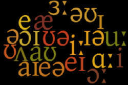
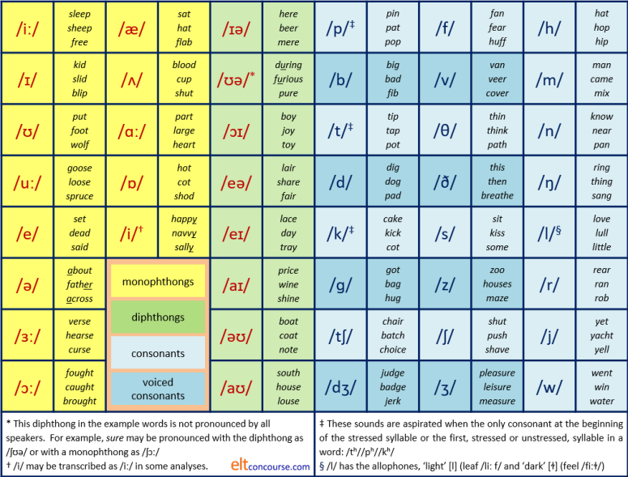

The essentials of pronunciation

This guide will, necessarily, use some phonemic transcription (as in the
picture above). At all times, there will be an effort to explain
what is meant so you do not need to be familiar with the phonemic
script.
However, if you are serious about teaching, you will need to learn how
to transcribe pronunciation so you should take
the
course in transcribing, on this site (new tab).
The 5 areas in this guide |
This guide concerns the 5 basic areas you need to cover to be able to help learners with their pronunciation:
- The sounds of English: phonemes, allophones and minimal pairs
- Consonants
- Vowels and weak forms
- Stress and intonation
- Connected speech
 |
The sounds of English: phonemes, allophones and minimal pairs |
The first thing to be aware of is that we are talking about
English sounds. The study
of language sounds (phonemic analysis) is
language specific. It
should not be confused with phonetic analysis which concerns how all
human sounds are made regardless of the language. So, what is
our concern here is phonemes and phonemic analysis, not phonetic
analysis.
In what follows, you will see letters and symbols sometimes put
between two slanted lines like this /z/. This means that we
are referring to the sound, not the letter.
For example, the last letter is heads is an s but
it is pronounced as /z/ not /s/. In cats, the last
letter is also an s but it is pronounced as /s/, not /z/.
- Phonemes:
-
In English the sounds /p/ and /b/ are phonemes because changing
one to the other affects the meaning of a word. For example,
if we change the first sound in the word bat from a /b/
to a /p/, we get a different word with a completely different
meaning,
pat.
Equally, if we change the vowel in the word sit to a long sound we get the word seat and that has a different meaning.
This is called the Minimal Pair Test:
If you change a single sound in a word in the same place and make a new word, the sound you have changed is a phoneme in that language.
In other languages, most varieties of Arabic, for example, the two sounds, /b/ and /p/, are not phonemes because changing one to the other will not change the meaning of a word (but it might sound odd).
It is quite important to know that phonemes are not simple sounds because there are variations in how they are pronounced depending on the speaker's accent and on where they come in a word or phrase. They are, in fact, sets of allophones (see next). - Allophones:
- Allophones are slightly different pronunciations of certain phonemes
which do not affect the meaning of what is said (although it may sound
odd). We saw above that /p/ and /b/ are allophones in most
varieties of Arabic as are, incidentally, /f/ and /v/ in some
varieties.
All languages have a number of allophones. For example, in English the sound /t/ can be pronounced with and without a following /h/ sound. Compare the sounds in track and tack. In English, these sounds are not phonemes because you can change /t/ to /tʰ/ without changing the meaning of a word. In some languages, Mandarin, for example, /t/ and /tʰ/ are separate phonemes and swapping them around will change the meaning of what you say. The same applies to /k/ vs. /kʰ/ (ski vs. cat) and /p/ vs. /pʰ/ (spin vs. pot).
The /l/ sound in English also has two allophones, the light [l] as in lap and the dark version (which has the phonetic symbol [ɫ]) and occurs at the end of words like moveable. The word lull has one of each, the light 'l' at the beginning and the dark 'l' at the end. - Minimal pairs:
- Pairs of words which are distinguished only by a change in one
phoneme in the same place are called minimal pairs. For example, hit-hat,
kick-sick, fit-bit, sheep-ship, jerk-dirk, hot-cot, love-live
etc. are all distinguished in meaning by a single change to a vowel
or a consonant. That's in English, of course. It bears
repeating that what is an allophone in English may be a phoneme in
other languages and vice versa.
Minimal pairs can also be distinguished by where the stress falls. For example:
If you stress the word export on the first syllable, you are referring to the noun. Stress the second syllable and you refer to the verb.
Stress the word convict on the first syllable and you refer to a resident of a prison. Stress the second syllable and you refer to act of finding someone guilty of an offence.
There is a PDF document you may like to download listing sets of commonly troublesome minimal pair sounds.
Click here for that list.
The next two sections look at the two major categories of phonemes in English: consonants and vowels.
 |
Consonants |
Consonants are sometimes described as the 'hard' sounds of the
language. They carry the most meaning because
y cn ndrstnd nglsh
wrds wth cnsnts nly, cn't y?
It is important, therefore, that learners can
pronounce consonants correctly. Many inflexions, for example, the
past-tense endings on regular verbs, carry significant meanings in
English so the difference between:
They smoke
and
They smoked
is carried only by a single sound (/t/). If that is not clearly
pronounced, as it may not be by learners whose first languages have no
final consonants (such as Thai), there may be a breakdown in
communication.
Definition:
When you produce a sound by completely or partially blocking
the air flow through the vocal tract, you produce a consonant.
For example, if you block and then release air through pressing your lips together, you will produce the sound /p/. If you block the back of your mouth by raising your tongue and then release the air, you will produce /k/.
 |
A key difference: voiced and voiceless consonants |
Some consonants are pronounced without using your
voice (i.e., vibrating your vocal cords or folds). To hear
the difference, say zoo and
sue and put your hand on your
throat.
The sound of 'z' you make by vibrating your vocal
cords: you can feel it.
The sound of 's' is made without your voice: you feel no
vibration.
Another example is to try pronounce codes and
coats. In the first, the sound of the
last letter is voiced (it is /z/) but in the second, the
sound is /s/ and it is not voiced.
In English, 21 letters of the alphabet represent consonants: B, C, D,
F, G, H, J, K, L, M, N, P, Q, R, S, T, V, X, Z, and usually W and Y.
However, English spelling is not a good guide to English pronunciation
so we need to know a little more.
There are, in fact, 24 basic consonant sounds in English:
| /p/ | as in | peach | /b/ | as in | bang | /t/ | as in | top |
| /d/ | do | /k/ | cough | /ɡ/ | good | |||
| /tʃ/ | chair | /dʒ/ | jumper | /f/ | food | |||
| /v/ | value | /θ/ | path | /ð/ | the | |||
| /s/ | sack | /z/ | zoo | /ʃ/ | sugar | |||
| /ʒ/ | leisure | /h/ | happy | /m/ | man | |||
| /n/ | nice | /ŋ/ | ring | /l/ | love | |||
| /r/ | roll | /j/ | yacht | /w/ | war |
Notice that the symbol /j/ is not the sound in
jug but the
sound at the beginning of yes.
Only 7 of the 24 sounds need a special symbol to represent them.
These 7 special symbols are:
| Symbol | Example | How to say it | Note on spelling |
| ʃ | ship | Put your tongue near the top of your mouth and blow air lightly over it using no voice. | This sound is usually spelled 'sh', as in the example of ship, but sometimes spelled with 's' or 'ss' as in sugar and passion. It can also be spelled 't' as in lotion. |
| ʒ | usually | Put your tongue near the top of your mouth and blow air lightly over it using your voice. | This sound is usually spelled with 's': pleasure,
treasure,
precision,
leisure,
measure
etc. It can appear at the beginning of words borrowed from French such as genre and gendarme. |
| θ | bath | Put your tongue tip between your teeth, blow a little air and remove your tongue using no voice. | This sound is spelled 'th': thank, think, third, breath, cloth, mathematics, thunder etc. |
| ð | that | Put your tongue tip between your teeth, blow a little air and remove your tongue using your voice. | This sound is spelled 'th': then, brother, bother, breathe, lather, clothes etc. |
| ŋ | thing | This is pronounced like the 'n' in thin but you block the air and redirect it through your nose (that's why it's called a nasal consonant). | This is almost always spelled 'ng':
sing, flinging,
twang, clang
etc. It cannot appear at the beginning of English words. |
| tʃ | chips | Put your tongue tip on the bony ridge behind your top teeth, build a little air behind and release using no voice. | This is variably spelled 'ch', 'tch' or 't': suggestion, question, kitchen, reach, such, adventure, fortune etc. |
| dʒ | judge | Put your tongue tip on the bony ridge behind your top teeth, build a little air behind and release using your voice. | This is variably spelled 'j', 'g' or 'dg': joy, German, budge, January, cage, pyjamas, sludge etc. |
The rest of the symbols used for consonants, with the exception of /j/ are as the letters are normally pronounced in English.
 |
Voiced and unvoiced pairsWe saw above that it matters quite a lot to the sound of a consonant whether you use your voice when making them or whether they are voiceless. Here are the pairs of voiced and unvoiced consonants with examples: |
| Unvoiced | Voiced | Examples |
| /p/ | /b/ | I caught a pike and took it home on my bike |
| /tʃ/ | /dʒ/ | It was cheap so I bought the jeep |
| /f/ | /v/ | He has a cooling fan in his van |
| /s/ | /z/ | On the bus I heard a fly buzz |
| /k/ | /ɡ/ | The cot was what we got |
| /t/ | /d/ | He patted the cat and it padded away |
| /θ/ | /ð/ | He became breathless and breathed hard |
| /ʃ/ | /ʒ/ | You need to take the location into the equation |
For much more about consonants, go to the guide in the in-service section of the site.
|  | Vowels |
Definition:
As we saw above, when you produce a sound by completely or partially
blocking the air flow through the vocal tract, you produce a consonant.
When you don't restrict the airflow at all, you produce a vowel.
All vowels are, therefore, voiced in the sense that the sounds are made by your vocal folds or cords and are affected by the shape of the channel through which the air flows.
With vowels, there is more of a problem because English has only 6
letters to represent them but there are 21 vowel sounds.
The 6 letters are: A, E, I, O, U and Y (in many cases). The letter
W can also represent a vowel, usually at the end of a word like cow.
Here are the 21 sounds with the symbols we use. You can
immediately see the lack of spelling-sound correspondence in English.
The sounds in question are
underlined.
The sounds in the grey cells are the pure or monophthong
vowels in English and those in the pink cells are combinations of
two pure vowels which form diphthongs.
| /iː/ | sleep sheep free |
/æ/ | sat hat flab |
/ɪə/ | here beer mere |
| /ɪ/ | kid slid blip |
/ʌ/ | blood cup shut |
*/ʊə/ | during furious poor |
| /ʊ/ | put foot suit |
/ɑː/ | part large heart |
/ɔɪ/ | boy deploy toy |
| /uː/ | goose loose Bruce |
/ɒ/ | hot cot shod |
/eə/ | lair share prayer |
| /e/ | Fred dead said |
†/i/ | happy navvy sally |
/eɪ/ | lace day betray |
| /ə/ | about father across |
/aɪ/ | price wine shine |
||
| /ɜː/ | verse hearse curse |
/əʊ/ | boat coat note |
||
| /ɔː/ | fought caught brought |
/aʊ/ | south house louse |
||
* This diphthong in the example words is not pronounced by all
speakers. For example, sure may be pronounced with
the diphthong as /ʃʊə/ or with a monophthong as /ʃɔː/ to sound the
same as shore.
† /i/ may be transcribed as /iː/ in some analyses.
 |
Types of vowels |
This is a complicated area and what follows is only an outline.
For more, see the in-service guide to vowels, linked below.
 |
The commonest vowel in English |
The commonest vowel in English does not have a letter to represent it
but it does have a symbol: the schwa /ə/.
It is a mid vowel, pronounced with the tongue right in the middle of your mouth and is
very short.
It is almost impossible to say anything without using it. The
vowel is the one that begins the word about and ends the word
sister. We do not pronounce the beginning of about as an
'a' sound (as in
hat)
and we do not pronounce the 'e' in sister the same way it is pronounced
in beg. In some dialects of English, we do not pronounce
the 'r' at the end of sister. So the phrase
about my sister
is transcribed with a
schwa at each end: /ə.ˈbaʊt
maɪ ˈsɪ.stə/.
The schwa occurs everywhere. Here are some examples with the schwa sound
underlined:
| vowel | a schwa in | transcribed |
| a | asleep | /ə.'sliːp/ |
| e | different | /'dɪ.frənt/ |
| i | definite | /'de.fɪ.nət/ |
| o | prosody | /'prɒ.sə.di/ |
| u | tedium | /'tiː.dɪəm/ |
| ou | tedious | /'tiː.dɪəs/ |
| io | nation | /'neɪʃ.ən/ |
 |
Short vowels and long vowels |
If you look at the symbols above, you'll see that the
symbol for the 'ee' in sheep is /iː/ but the symbol for the 'y'
at the end of happy is /i/.
When you try to say the words, you will hear that the sound at the end
of happy is much shorter than the sound in the middle of
sheep but you make both sounds in the same way.
The small ':' sign after the symbol shows that the vowel is long.
Look, too, at the symbol for the vowel in kid, slip and blip (/ɪ/) and compare it to the sound of the vowel in free (/iː/). Which one would come in sit and which one comes in seat? Click here when you have an answer.
Right.
The long vowel is in seat so that is transcribed as /siːt/ and
the short one comes in sit and that is transcribed as /sɪt/. This
is important because many languages do not have this distinction and it
causes lots of problems.
In the in-service section of this site, there is a guide to other
troublesome sounds for speakers of a range of first languages linked in the list of related guides at the end.
|
|
Pure vowels and diphthongs |
Some vowels in English are 'pure' and some are formed by moving from one vowel to another. They are highlighted in the pink cells in the table above.
In the first and third, grey columns of the vowel table above, the sounds
are single vowels (monophthongs). There are 13 of these.
In the fifth column, we have the 8 diphthongs usually recognised.
If you pronounce the sound of a diphthong really slowly and clearly, you can usually hear the
two separate sounds.
For example, the sound in /ʊ/ is the simple vowel sound in foot but the
first vowel /ʊə/ in during is formed by starting with the /ʊ/sound (as
in good) and
then moving to the /ə/ sound: it sounds like oo - er. In
short words, such as poor, the vowel is often pronounced as a
monophthong (/ɔː/).
Another example is the pronunciation of prayer: begin with the
/e/ sound as in dead and move to a schwa (/ə/) to make the
diphthong: it sounds like eh - er and is transcribed as /eə/.
 |
Semi-vowels |
We saw above that the letter Y is sometimes considered a vowel and sometimes a consonant. It is, in fact, a semi-vowel.
- Sometimes it acts as a consonant: the sound it represents at the beginning of the word yesterday is a consonant (transcribed as /j/) and at the end it forms part of the vowel sound (transcribed as /eɪ/).
- The sound it represents in bicycle is a vowel (transcribed as /ɪ/).
So, the clause yesterday I rode a bicycle is transcribed as: /ˈjest.əd.eɪ ˈaɪ rəʊd ə ˈbaɪ.sɪk.l̩/.
The sounds represented by the letter W have a similar characteristic.
In the word was it is a consonant (/w/) but in the word
lower, it is a diphthong vowel (/əʊ/).
If you would like to learn a lot more about vowels go to the guide in the in-service section.
If you feel up to it, click here for a set of three short matching tests to practise your recognition of vowel sounds in English (new tab).
 |
Stress |
When we stress a sound or a word in English, we do three things:
- We make it louder
- We make it longer
- We usually raise its pitch or note
There are two types of stress to consider here.
- Sentence stress
- This refers to stressing a word (or part of one) in a sentence.
Usually, in English, we stress the new information in a sentence and that often comes at the end of what we say. For example:
He came to the party with his brother and sister.
I went to work by bicycle.
Sometimes we stress a word or part of one because we want to make a special contrast.
Try it with these examples:
Did you go to Cambridge?
No. I went to Oxford.
Was it expensive?
No, it was really cheap.
Peter was late.
No. Paul was late. - Word stress
- This refers to which part
of a word we stress.
There are no absolute rules in English and the area causes lots of problems.
Most common 2-syllable nouns in English take the stress on the first syllable so we have, for example (looking around the office):
printer
keyboard
glasses
pencil
bookshelf
drawer
etc.
Many common 2-syllable verbs are stressed on the second syllable:
impose
agree
complain
decide
destroy
invent
etc.
Longer words pose more of a problem and the rules are complicated.
With word stress in particular, it is important in the classroom to
mark the stress when you introduce a new word. Like this:

If you want to learn more about stress in English refer to the in-service guide to word stress.
Intonation |
Intonation refers, among other things, to the way
the pitch and volume of the voice falls and rises across a sentence.
Intonation is another quite technical area so this, too, will be
brief.
There is a
guide to
intonation
in the in-service section which is quite technical but may be of
interest.
Here's a very short guide:
| 1 | Flat: neutral tone showing little emotion; it may sound rude or uninterested | |
| 2 |
|
Falling tone: showing a positive response |
| 3 | Rising tone: indicating slight surprise or a query: Why do you ask? | |
| 4 | Sharply rising tone: indicating astonishment that someone should ask | |
| 5 | Rising tone followed by falling tone: indicating doubt: I may come | |
| 6 | Falling tone followed by rising tone: indicating something like: Carry on. I'm interested to know why you ask. |
You can try it for yourself by putting all six intonation patterns on the responses here:
- Are you coming to the party?
-
- I can do (flat and neutral showing boredom)
- Yes, of course (falling tone, showing positive response)
- Of course! (rising tone showing slight surprise)
- Of course! It was my idea! (sharply rising tone)
- I don't know. I might be back from France in time (rising followed by falling to show doubt)
- Well, it's an idea, I guess (falling followed by rising to show curiosity)
Connected speech |
So far, we have mostly been talking about single sounds or single words.
The last part of this refers to what happens when words meet in
sentences.
Again, this is quite a technical area so the following will be quite
brief.
 |
Contracted forms |
English is unusual, but not unique, in having a wide range of
contracted forms so, for example:
She would have been to the cinema
is, in speech and informal writing, rendered as
She'd've'been to the cinema
Less extremely, I am is contracted to I'm, we have
to we've and so on.
Here's a list of the common contracted forms in English. A
fuller list with the transcription of the forms in phonemic script
and some important notes is available from the link at the end.
| Full form | Contracted | Full form | Contracted | Full form | Contracted | Full form | Contracted |
| I am | I'm | I have | I've | I had | I'd | let us | let's |
| you are | you're | you have | you've | you had | you'd | not | n't |
| he is | he's | he has | he's | he had | he'd | will / shall | 'll |
| she is | she's | she has | she's | she had | she'd | do | d' |
| it is | it's | it has | it's | it had | it'd | does | 's |
| we are | we're | we have | we've | we had | we'd | about | 'bout |
| they are | they're | they have | they've | they had | they'd | of the | o' |
 |
Weak forms |
Do you remember the schwa (/ə/)?
This sound occurs in many words when they are in a connected stream but
not when they stand alone.
For example, the word for (which alone sounds just like the word
four)
usually contains a schwa when it occurs in speech and is a very short /fə/
sound. The word four does not do that.
Try saying
I bought four for you
and you will hear what's meant.
It is transcribed as /ˈaɪ.ˈbɔːt.fɔː.fə.ju/ and you can refer to the
chart above to see how that happens.
This is called the weak form of the vowel. Here are some other
examples:
- The word been is often pronounced as bin in rapid speech.
- The word and is often pronounced 'n' in rapid speech as in fish 'n' chips.
- The word of is usually pronounced /əv/ in rapid speech. The /v/ sound can also be dropped as in a cuppa coffee.
- The words too, two and to are differently
pronounced in rapid speech:
two and too are pronounced in their full form as /tuː/ but to is often weakened to /tə/. Try saying:
Two friends went to London and I did too.
That's transcribed as /ˈtuː.frendz.ˈwent.tə.ˈlʌn.dən.ənd.ˈaɪ.dɪd.tuː/ in which you can see the different pronunciations of to, two and too and notice how and is pronounced (as /ənd/).
There's a list of common weak forms on this site.
 |
Where words meet |
At the borders between words a number of things can happen:
- sounds can change. For example:
- if you say
when possible
quickly, the 'n' at the end of when can sound like a 'm' because your lips are already moving to make the sound of 'p'.
- if you say
- sounds can move. For example:
- when you say
an apple
quickly, it can sound like
a napple.
- when you say
- sounds can disappear. For example:
- when you say
a clothes line
quickly, it usually sounds like
a close line.
- when you say
- sounds can appear. For example:
- when you say
law and order
quickly, it sounds like there is a 'r' sound before the word and.
- when you say
For more in this area, go to the in-service guide to connected speech.
 |
Sound-Spelling relationships |
English is famous, if not notorious, for having a spelling system
which does not reliably represent the sounds of words. Other
languages, such as most European languages, are far more consistent in
this respect although none is absolutely consistent or predictable.
Many languages also undergo regular spelling reforms to keep the
spelling of words (the orthography) in line with the pronunciation of
words (the phonology).
For example, the vowel in all these words is the same
(transcribed as /ɔː/):
bought
short
or
core
law
taught
four
That is confusing and irritating for many learners and the
situation is made far worse because some languages (such as the Chinese
languages) have a non-alphabetic writing system. Learners may be
tempted, therefore, to spell things as they hear them and pronounce
things as they see them.
Even when a word looks as if it will be pronounced as it is spelled, the
phrasing of English in rapid (i.e., normal) speech means that sounds are
changed or omitted altogether. For example, the word tramped
is often pronounced as if it were spelled as tramt and the word
to in something like we went to London is often
pronounced as just a 't'.
For more on the regularities and irregularities of the English spelling
system, see the guide to spelling.
 |
The phonemic chartNo chart not cart: /tʃɑːt/ not /kɑːt/ |
Most classrooms have a chart on the wall of all the sounds in
English as an aid for the teacher (so you can point to what you
mean) and as an aid to learners (so they can become familiar with
the representations of sounds they hear).
Unfortunately, the charts often differ slightly from version to
version.
Here are all the sounds of English in a single chart. You can download a PDF version by clicking here.

Other guides |
There are links above to guides to tell you more about the issues on this page but here they are in one place.
| consonants | in the in-service section so slightly more technical |
| vowels | |
| word stress | |
| connected speech | |
| intonation | |
| teaching troublesome sounds | |
| teaching pronunciation | in the initial-plus section so slightly easier |
| pronouncing inflexions | this is a guide to how we pronounce -s, -es, 's, -d and -ed endings on words |
| contracted forms | this is a PDF document with a fuller list of the common contracted forms in English with some notes |
| phonology terminology | whatever your background |
| learn to transcribe |
If you would like to hear the sounds of English, the ideal place to go has been kindly provided by the British Council.
Take a short test of some key ideas.